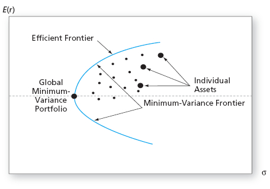
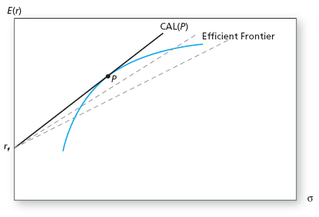

Portfolio Optimization with Many Risky Assets
Portfolio Returns
Suppose you can now invest in an arbitrary number (\(N\)) of risky
assets.
- Index the assets by \(i = 1, \ldots, N\).
- Let \(\omega_i\) be the fraction of income invested in asset \(i\).
- We will always assume that \(\sum_{i=1}^N \omega_i = 1\).
- We will denote the return to asset \(i\) by \(r_i\).
- The portfolio return is expressed as
\[r_p = \sum_{i=1}^N \omega_i r_i.\]
Portfolio Moments
From the properties of expectation and variance, we can compute the
mean and variance of the portfolio return.
- Recognize that the \(N\) asset returns, \(r_i\), are random
variables.
- Denote the means of \(r_i\) as \(\mu_i\).
Portfolio Moments
- The \(N \times N\) covariance matrix of the returns contains the
variances, \(\sigma^2_i\), and covariances, \(Cov(r_i,
r_j) = \sigma_{ij}\):
\[\begin{split}\Sigma_P & = \left[\begin{array}{cccc} \sigma^2_1 &
\sigma_{12} & \cdots & \sigma_{1N} \\ \sigma_{21} &
\sigma^2_2 & \cdots & \sigma_{2N} \\ \vdots & \vdots &
\ddots & \vdots \\ \sigma_{N1} & \sigma_{N2} & \cdots &
\sigma^2_N \end{array}\right]\end{split}\]
Portfolio Moments
Thus resulting moments of the portfolio are
\[\begin{split}\mu_p & = \sum_{i=1}^N \omega_i \mu_i \\\end{split}\]
\[\begin{split}\sigma^2_p & = \sum_{i=1}^N \omega^2_i \sigma^2_i +
2 \sum_{i=1}^{N-1} \sum_{j=i+1}^N \omega_i \omega_j \sigma_{ij}.\end{split}\]
What are other ways to express \(\sigma^2_p\)?
Optimization: Risky MV Frontier
To determine the set of efficient risky portfolios (the risky
frontier), the investor solves
\[\min_{\{\omega_i\}_{i=1}^{N-1}} \sigma^2_P =
\sum_{i=1}^N \omega^2_i \sigma^2_i + 2 \sum_{i=1}^{N-1}
\sum_{j=i+1}^N \omega_i \omega_j \sigma_{ij}\]
subject to
\[\mu_p = \sum_{i=1}^N \omega_i \mu_i\]
where \(\mu_p\) is some prespecified value of the portfolio mean
return.
Optimization: Risky MV Frontier
Note that
- The optimization problem has \(N-1\) choice variables:
\(\{\omega_i\}_{i=1}^{N-1}\).
- \(\omega_N\) is not a choice variable because it is found from
the constraint: \(\omega_N = 1 - \sum_{i=1}^{N-1} \omega_i\).
- This is a challenging problem that is only tractable with linear
algebra (we won’t solve it).
Risky Minimum-Variance Frontier
\(\qquad\)

Risky Minimum-Variance Frontier
The frontier generated by multiple risky assets is known as the risky
minimum-variance (MV) frontier.
- The lower portion of the frontier is inefficient since a higher mean
portfolio exists with the same volatility on the upper portion of
the frontier.
- The efficient MV frontier is generated by allowing investment in a
risk-free asset and finding the CAL which is tangent to the risky
efficient MV frontier.
Efficient Minimum-Variance Frontier
\(\qquad\)

Optimization: Efficient MV Frontier
To determine the tangency portfolio, the investor solves the same
problem as before
\[\max_{\mu_p, \sigma_p} SR_p = \frac{\mu_p - r_f}{\sigma_p}\]
subject to
\[\mu_p = \sum_{i=1}^N \omega_i \mu_i\]
\[\sigma_p = \sqrt{\sum_{i=1}^N \omega^2_i \sigma^2_i + 2
\sum_{i=1}^{N-1} \sum_{j=i+1}^N \omega_i \omega_j \sigma_{ij}}.\]
Optimization: Investor Choice
So far we have specified two optimization problems:
- To determine the risky minimum-variance frontier by minimizing
variance subject to a particular expected return.
- To determine the tangency portfolio, by maximizing the Sharpe
Ratio subject to constraints on the mean and standard
deviation.
Neither of these made use of preferences. A final optimization
problem would be the same as before:
- Maximize utility, \(U(\mu_p, \sigma_p)\), subject to investing
in the tangency portfolio and a risk-free asset.
Estimation
In practice we must estimate \(\mu_i\), \(\sigma^2_i\) and
\(\sigma_{ij}\) for \(i=1,\ldots,N\) and \(j=i+1,\ldots,N\).
- A total of \(N\) estimates of means.
- How many variances and covariances must we estimate?
- A total of \(N\) elements on the diagonal (variances).
- All of the elements above or below the diagonal (not both
because of symmetry).
Estimation
- The resulting number of variance and covariance estimates is
\[\begin{split}N + (N-1) + (N-2) + \ldots + 2 + 1 & = \sum_{i=1}^N i =
\frac{N(N+1)}{2}.\end{split}\]
Estimation
The total number of estimates is
\[\begin{split}N + \frac{N(N+1)}{2} & = \frac{N(N+3)}{2}.\end{split}\]
- As an example, a portfolio of 50 stocks requires \(\frac{50
\times 53}{2} = 1325\) estimates.
- The models of subsequent lectures will reduce this estimation
burden.
Portfolio Optimization Recipe
For an arbitrary number, \(N\), of risky assets:
- Specify (estimate) the return characteristics of all securities
(means, variances and covariances).
- Establish the optimal risky portfolio.
- Calculate the weights for the tangency portfolio.
- Compute mean and std. deviation of the tangency portfolio.
Portfolio Optimization Recipe
- Allocate funds between the optimal risky portfolio and the
risk-free asset.
- Calculate the fraction of the complete portfolio allocated to the
tangency portfolio and to the risk-free asset.
- Calculate the share of the complete portfolio invested in each
asset of the tangency portfolio.
Separation Property
All investors hold some combination of the same two assets: the
risk-free asset and the tangency portfolio.
- The optimal risky (tangency portfolio) is the same for all
investors, regardless of preferences.
- The tangency portfolio is simply determined by estimation and a
mathematical formula.
- Individual preferences determine the exact proportions of wealth
each investor will allocate to the two assets.
- This is known as The Separation Property (or Two Fund
Separation).
Separation Property
The separation property implies that portfolio choice can be separated
into two independent steps:
- Determining the optimal risky portfolio (preference independent).
- Deciding what proportion of wealth to invest in the risk-free asset
and the tangency portfolio (preference dependent).
Separation Property
The separation property will not hold if
- Individuals produce different estimates of asset return
characteristics (since differing estimates will result in different
tangency portfolios).
- Individuals face different constraints (short-sale, tax, etc.).
The Power of Diversification
Let’s formalize the benefits of diversification. The variance of a
portfolio of \(N\) risky assets is
\[\begin{split}\sigma^2_p & = \sum_{i=1}^N \sum_{j=1}^N \omega_i \omega_j
\sigma_{ij} = \sum_{i=1}^N \omega^2_i \sigma^2_i + 2
\sum_{i=1}^{N-1} \sum_{j=i+1}^N \omega_i \omega_j \sigma_{ij}.\end{split}\]
In the case of an equally weighted portfolio,
\[\begin{split}\sigma^2_p & = \frac{1}{N^2} \sum_{i=1}^N \sigma^2_i
+ \frac{2}{N^2} \sum_{i=1}^{N-1} \sum_{j=i+1}^N \sigma_{ij} \\
& = \frac{1}{N} \overline{Var} + \frac{N-1}{N}
\overline{Cov}.\end{split}\]
The Power of Diversification
Where
\[\begin{split}\overline{Var} & = \frac{1}{N} \sum_{i=1}^N \sigma^2_i\end{split}\]
and
\[\begin{split}\overline{Cov} & = \frac{2}{N(N-1)} \sum_{i=1}^{N-1}
\sum_{j=i+1}^N \sigma_{ij}.\end{split}\]
These are the average variance and covariance.
The Power of Diversification
The limit of portfolio variance is
\[\begin{split}\lim_{N \to \infty} \sigma^2_p & = \lim_{N \to \infty} \frac{1}{N}
\overline{Var} + \lim_{N \to \infty} \frac{N-1}{N}
\overline{Cov} = \overline{Cov}.\end{split}\]
- If the assets in the portfolio are uncorrelated or not correlated
on average (\(\overline{Cov} = 0\)), there is no limit to
diversification: \(\sigma^2_p = 0\).
- If there are systemic sources of risk that affect all assets
(\(\overline{Cov} > 0\)) there will be a lower bound on ability
to diversify: \(\sigma^2_p > 0\).
{kind=link}
{kind=link}